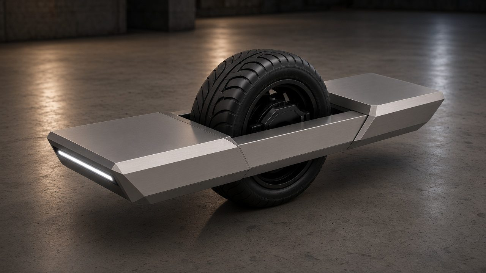
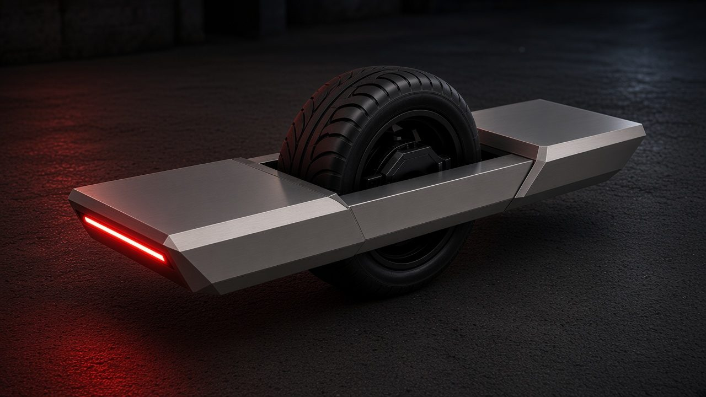
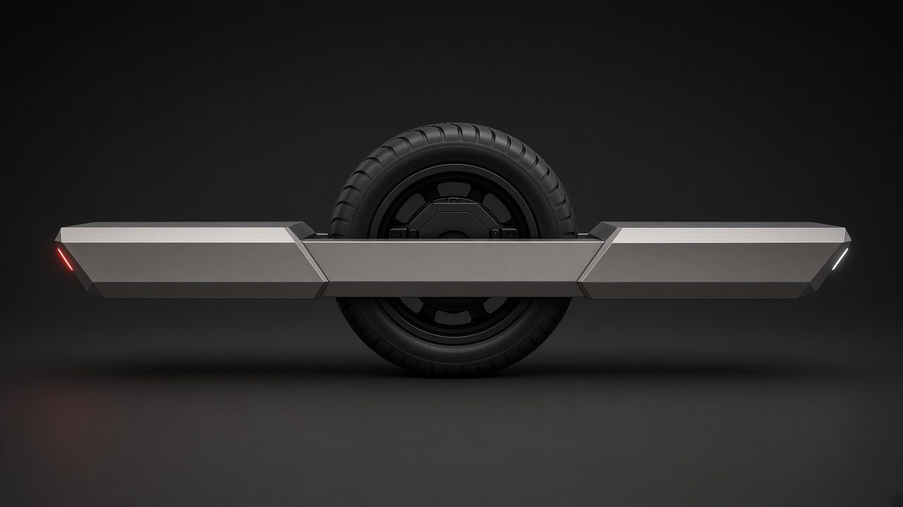
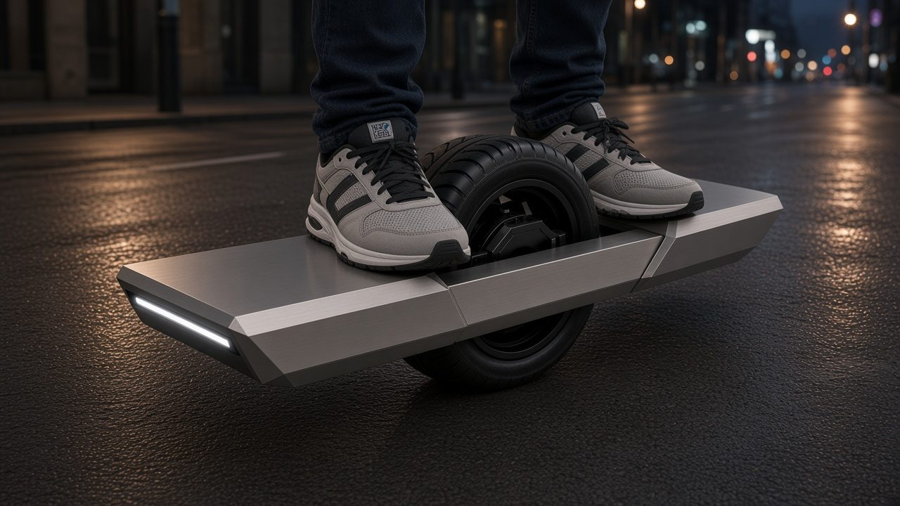
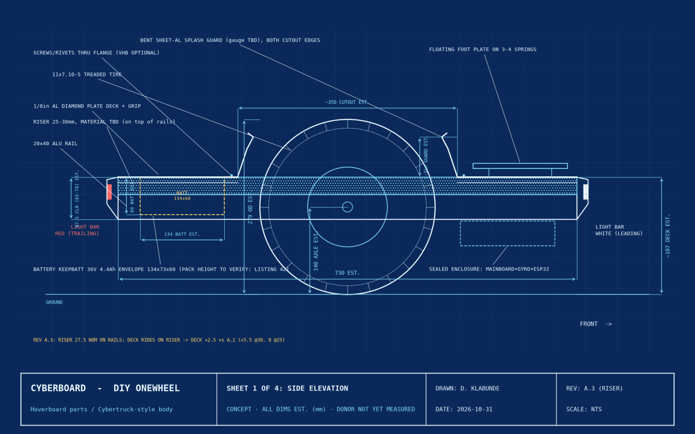
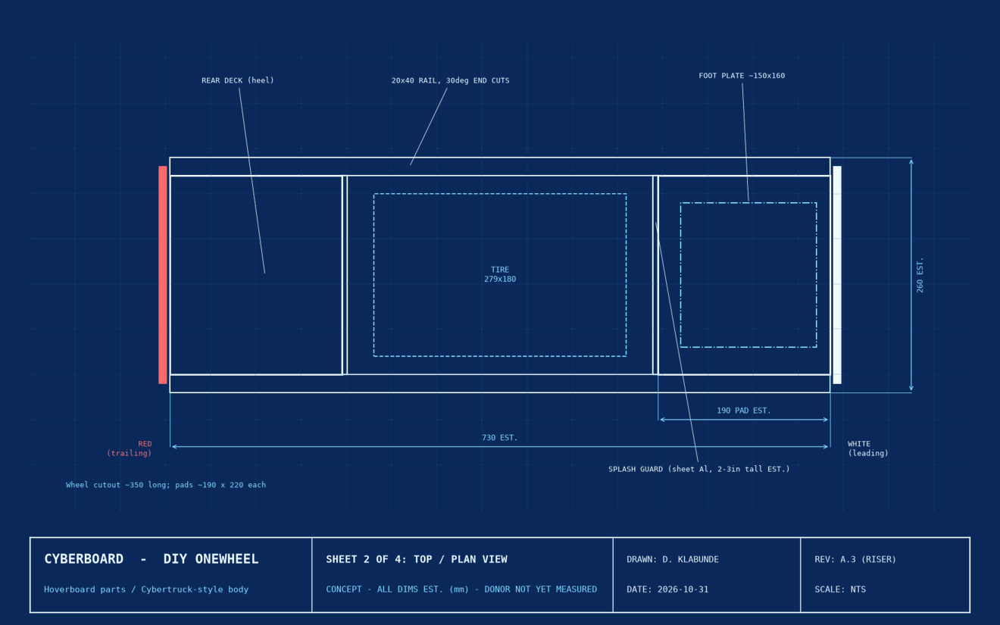
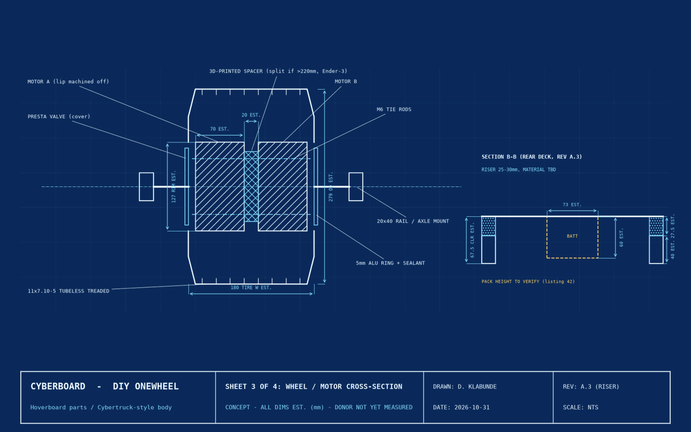
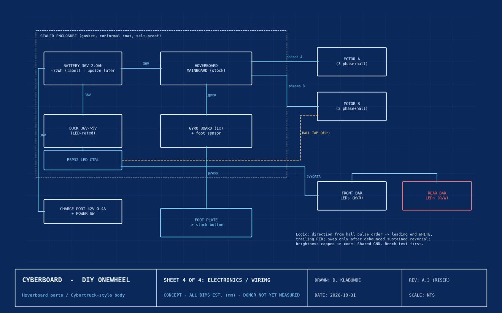
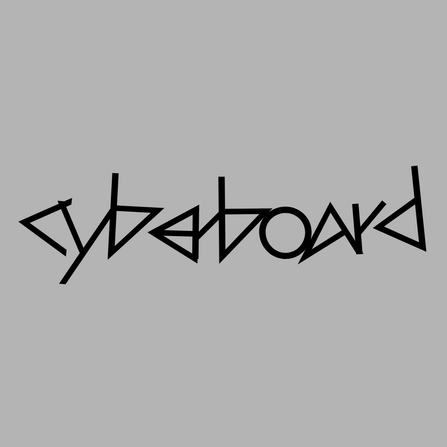
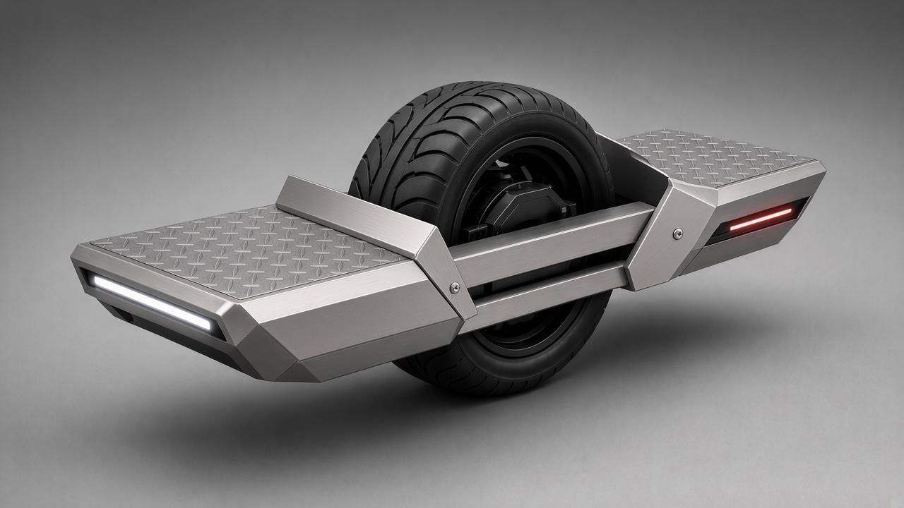

← CyberBoard overview · All projects
CyberBoard: engineering deep dive
A DIY ultra-minimal one-wheel electric board built from a used hoverboard.
Lead designer & builder · Oct 2026 – present
Status
In progress · Design phase, parts arriving. The used donor hoverboard is in hand ($40). Its battery read about 0.7 V on the bench, so a 36V 4.4Ah replacement pack is on order ($48.99), and the blueprints are at Rev A.3 with a riser to fit it. Spent so far: $88.99 of $150–200. Physical dimensions are still estimates (EST.) until the donor is measured.
Problem & goal
Build a rideable single-wheel (Onewheel-style) board from a used hoverboard, with an ultra-minimal, sharp-edged smooth-aluminum look and direction-aware LED lighting, for $150–200 total using basic tools.
Requirements
| ID | Requirement | Source / reason |
|---|---|---|
| R1 | Total build cost ≤ $150–200 | Budget set by me |
| R2 | Reuse a 6.5" 36V (10S) hoverboard: motors, charger, mainboard, gyro board (battery replaced) | Cost; reference build uses stock electronics |
| R3 | 11x7.10-5 tubeless treaded tire, tire only (the motors act as the rim); buy single or pair only | Grip on wet roads and snow |
| R4 | Sealed, salt-proof electronics: gasketed lid, cable glands, conformal coating | Follows from riding in wet/snow |
| R5 | Leading-end light white, trailing-end red; swap only after a sustained reversal | Visibility; no flicker near standstill |
| R6 | Fast access to the avionics: top deck plates come off with a few screws into rivet nuts/threaded inserts | Serviceability (top priority) |
| R7 | Quick-disconnect wiring (e.g. XT60 battery, JST/Dupont signals); no permanent adhesive on serviced parts; wheel drops out via axle clamp bolts | Serviceability |
| R8 | Printed parts fit ~220×220 mm bed, PLA; CAD in FreeCAD, deliver STEP + STL | Available tools |
| R9 | Rider-detect stays on the stock, proven circuit | Safety-critical |
Parameters & constraints (Rev A.3)
Donor values are from its spec label. Dimensions are EST. from the reference build and Rev A.3 sheets, to be replaced by measured values in Rev B.
| Parameter | Value | Status |
|---|---|---|
| Overall length | 730 mm (2× 20×40 mm aluminum rails, 30° cuts) | EST. |
| Width | 260 mm | EST. |
| Tire | 11x7.10-5 tubeless, treaded · ~279 mm OD × ~180 mm wide | Spec chosen; dims EST. |
| Rim | Two hub motors, ~127 mm (5") dia, ~70 mm wide each + ~20 mm spacer | EST. |
| Axle height | ~140 mm | EST. |
| Battery riser | ~27.5 mm (25–30) on top of the rails; material TBD | Rev A.3 |
| Deck top height | ~187 mm from ground (riser adds ~2.5 mm vs Rev A.2) | EST. |
| Foot pads | ~190 × 220 mm each | EST. |
| Foot trigger plate | ~150 × 160 mm | EST. |
| Deck material | 1/8" (3.2 mm) aluminum; diamond plate vs smooth top under review (concept v5 is all-smooth) | Open |
| Donor | Used 6.5" 36V hoverboard: 42V 0.4A charger, 160 lb max load, 7 mph max (label) | Confirmed |
| Battery | 36V 4.4Ah 10S2P Li-ion, XT60, 20A BMS; listed 134×73×42 mm (replaces the dead 2.0Ah donor pack) | Ordered |
| Motors | 2× hub motors, typically 250–350 W each | Typical; donor not measured |
| Logic power | 36V → 5V buck converter sized to LED current; brightness capped in code | Part TBD |
| LEDs | SEZO 144/m addressable strips | Chosen |
| Lighting MCU | ESP32 (or Arduino Nano) | Chosen |
| Weight, top speed, range | TBD | Not yet tested |
System architecture
Mechanical
- Two aluminum 20×40 mm rails form the frame; the hoverboard's axle-mount adapter is cut in half and reused, with M8 bolts
- Wheel: two hub motors bolted side by side (M6 rods + 3D-printed spacer) with the rim lip machined off; sides sealed with automotive sealant and a 5 mm aluminum ring; Presta valve tapped into a motor cover
- Decks: 1/8" aluminum diamond plate, screwed into rivet nuts so they lift off for service
- Splash guards: thin (~1/16") bent sheet-aluminum guards, 2–3" tall, at each wheel cutout edge (full fender dropped)
- Riser: 25–30 mm spacer on top of the rails only (Rev A.3) to clear the larger battery
- Printed parts split to fit the printer bed; split parts bonded with two-part plastic epoxy, no CA glue on load-bearing joints
- Printed parts (MakerWorld kit: spacers, bumpers, gyro activator cap, gyro mounting template; PLA ~549 g, ~16 h)
Electrical & power
- Stock mainboard and one gyro board; the gyro input is rewired so a single gyro drives both motors (no custom firmware)
- 36V → 5V buck converter feeds the ESP32 and LED strips
- New 36V 4.4Ah pack between the rails under the deck, made to fit by the Rev A.3 riser; mainboard, gyro and ESP32 under the front deck, in sealed enclosures
- Cold weather: expect reduced output and range; do not charge below 0 °C
Control & sensors
- Primary direction sensing: tap one hub motor's hall sensor lines; pulse order gives forward vs reverse
- Backup: MPU6050 IMU (noisier, because the board is always tilting)
- Hysteresis/debounce so colors swap only after a sustained reversal
- Rider detect: floating foot plate on 3–4 springs or rubber bumpers presses the stock foot button; stock wiring and logic kept
Bill of materials
Spent so far: $88.99 (donor + battery). Other prices are listing prices, not final costs.
| Item | Choice | Est. cost | Status |
|---|---|---|---|
| Donor hoverboard | Used 6.5" 36V board, local pickup | $40 | Bought |
| Battery | 36V 4.4Ah 10S2P pack, XT60 | $48.99 | Ordered |
| Tire | 11x7.10-5 tubeless treaded (cheapest tread-confirmed listing $64.06) | ~$64 | Order after board arrives |
| Lighting | ESP32/Nano, hall tap, buck converter, LED strips | ~$10–15 | Planned |
| Frame rails | 2× 20×40 mm aluminum, 730 mm | TBD | Planned |
| Decks | 1/8" aluminum diamond plate, 24×24 in sheet | TBD | Planned |
| Guards | ~1/16" aluminum sheet | TBD | Planned |
| Fasteners | Rivet nuts/inserts, M5/M6 hex, M8 bolts, M6 rod | TBD | Planned |
| Printed parts | PLA, ~549 g | TBD | Planned |
| Total | $88.99 spent so far (target $150–200) |
Design decisions
| Decision | Alternatives considered | Choice & rationale |
|---|---|---|
| Donor drivetrain | Buy motor/controller/battery separately | Reuse a used hoverboard: far cheaper; tied to stock electronics |
| Battery | Keep the 2.0Ah donor pack; ≤$25 used pack | New 36V 4.4Ah 10S2P pack ($48.99): donor pack read ~0.7 V (dead) and was too small for range |
| Battery fit | Enclosure hanging below the rails | 25–30 mm riser on the rails (Rev A.3): keeps ground clearance, pack sits under the deck |
| Look | Angular faceted body with rails and visible fasteners (earlier concepts looked like a hovercraft) | Concept v5/v6: all-smooth aluminum, sharp edges, lights only on the end faces, no visible screws |
| Donor source | New 6.5" boards $99–130; eBay used (mostly parts) | Used local board $15–45: keeps budget; must be tested |
| Wheel | Tire + rim kit | Tire only; the two motors are the rim, so a rim is wasted money |
| Tread | Slick ($29.79–39.99) | Treaded: wet and snow grip; costs more; ice still needs studs |
| Firmware | hoverboard-firmware-hack-FOC | Stock electronics, one gyro rewired: proven in the reference build, less risk |
| Foot trigger | FSR / force sensor | Spring-mounted plate pressing the stock button: no new electronics in the safety-critical circuit |
| Direction sensing | MPU6050 IMU | Hall sensor tap primary (cleaner signal); IMU kept as backup |
| Deck material | 9 mm plywood (needs sealing), PVC (brittle in cold), HDPE/polycarbonate (flexy), G10 (expensive) | 1/8" aluminum diamond plate: stiff, weatherproof, available locally |
| Avionics access | Dedicated hatch with captive/quarter-turn fasteners | Removable top plates with screws into rivet nuts: simpler, threads survive repeated removal |
| Fender | Full fender; short 1–2" wedge guards | Thin 2–3" bent sheet-aluminum guards: keep the look, still catch debris |
| Adhesive for split PLA parts | CA glue; flexible plastic bonder | Rigid two-part plastic epoxy: fills seams, longer working time |
| Cosmetic marble slab | Slab | Scrapped: heavy, brittle, cosmetic only |
Timeline
| Date | Work |
|---|---|
| Oct 29 | Kickoff and research; specs, budget, treaded tire, foot-trigger plate, direction-aware lighting; Rev A blueprints approved; rail sticker; serviceable top plates; aluminum deck and sheet guards chosen |
| Oct 30 | Adhesive plan for split printed parts (two-part plastic epoxy) |
| Oct 31 | Donor hoverboard bought ($40); label specs added; Rev A.2 (splash guards); concept v5 all-smooth look; bigger battery decided; Rev A.3 riser; concept v6 renders; bench reading ~0.7 V on the donor pack |
| Nov 1 | Ordered the 36V 4.4Ah replacement pack ($48.99) |
Testing plan
One bench reading so far; everything else is planned.
| Test | Pass criteria | Result |
|---|---|---|
| Donor pack voltage at terminals | Above BMS cutoff so it can charge | Fail: ~0.7 V. Pack treated as dead; replacement ordered |
| Verify donor is 36V | Matches spec | Pass (spec label: 36V, 42V charger) |
| Donor bench test with new pack: motors, gyro, charger | Both motors spin; gyro and foot button respond | Not yet tested |
| Single-gyro rewire | Both motors respond to one gyro | Not yet tested |
| Wheel seal | Holds pressure (leak rate TBD) | Not yet tested |
| Hall tap bench test | Direction detected without disturbing the mainboard | Not yet tested |
| LED direction switching | Correct colors; no flicker near standstill | Not yet tested |
| Foot plate | Reliably presses the stock button under rider weight | Not yet tested |
| Service access | Top plates off and electronics unplugged without touching wheel or frame | Not yet tested |
| Ride tests | Low speed first, then full speed; stable | Not yet tested |
Risks & open issues
| Risk / issue | Mitigation |
|---|---|
| Donor mainboard/gyro may be damaged (pack was fully drained) | Bench test with the new pack before building |
| New pack height unconfirmed (listing 42 mm vs 60 mm envelope drawn) | Measure on arrival; riser 25–30 mm covers either |
| Tapping hall lines could disturb the motor controller | Splice carefully, share ground, bench-test before assembly; IMU backup |
| Water and road salt reaching electronics | Gasketed enclosure, cable glands, conformal coating |
| Cold-weather battery loss | Plan reduced range; no charging below 0 °C |
| Ice traction | Treaded tire is not enough on ice; studs would be needed |
| Tire (~$64) still to buy with $61–111 of budget left | Cheapest tread-confirmed listing; tools kept to essentials |
| All dimensions estimated | Rev B after measuring motors, axle flats, button and battery |
| Exact printer model TBD | Design for ~220×220 mm bed |
Images




















Next steps
- Bench-test motors, gyro and charger with the new 36V 4.4Ah pack
- Measure the new pack, motors, axle flats, foot button and controller
- Pick riser material and deck finish (smooth vs diamond plate)
- Order the treaded tire
- Model the foot-trigger plate and bracket in FreeCAD (STEP + STL)
- Rev B blueprints with measured dimensions; final guard height/angle
- Fabricate frame, decks and guards; wire and seal electronics
- Run the test plan above, low speed first